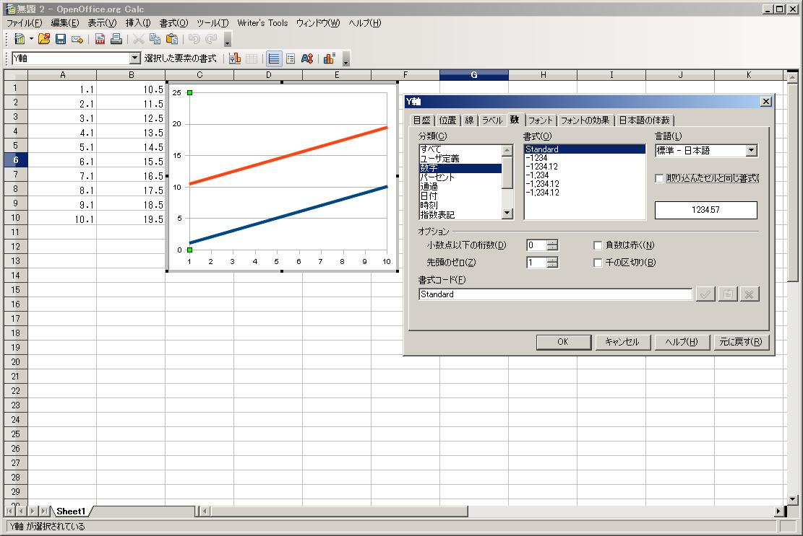

Home of site
初心者Memo / Calc No.2
( 関数 )
OOo入門Calc編の続編です。
前編で、ExcelとCalcの関数文法は、","と";"( LibreOfficeではExcelと同じ"," )の違いである事を示しました。
今回も前回に引き続いてよく使う関数について紹介します。
1.数学に使う関数
1)PI() : Π（3.14)の事
2)Sin(x) ： Sin関数。xはラジアン表記
3)Cos(x) : Cos関数。xはラジアン表記
4)Tan(x) : Tan関数。xはラジアン表記
5)LN(x) : LOGe関数。
6)^(x) ：べき乗関数。xを分数にするとべき乗根になる。例）2^(1/2)=1.4142
7)Exp(x) : e を底とする数値のべき乗を返します。
8)round(数値;四捨五入した後に残す少数点以下の桁数)：round(10.12345;2)=10.12
9)Roundup(数値;切り上げした後に残す少数点以下の桁数)：Roundup(10.12345;2)=10.13
10)Rounddown(数値;切り下げした後に残す少数点以下の桁数)：Rounddown(10.12345;2)=10.12
11)mod(割り算) ： 割り算した際の余りの数を返す。
2.文字列関数：文字列を制御する関数
1)Len("文字列"）: 文字列の数を返す。
2)Left("文字列";取得する文字数) ： 文字列の左から指定した数の文字列を返す。
3)right("文字列"；取得する文字数) : 文字列の右から指定した数の文字列を返す。
4)mid("文字列";取得開始位置;取得文字数) : 取得開始位置から指定した数の文字列を返す。
5)FIND("検索文字"; "対象文字列"; 検索開始位置) ：文字列の中から、検索文字がある場所を左からの数値として返す。
6)Datevalue("文字列") : 文字列の日付を日付データに変換
7)Code("文字列") : 文字列の頭文字(1文字)のコード番号を返す。Code("E") => 69 / Code("Excel") => 69 / Code(A2) => 69 (A2 Cell値="Excel") 日本語(全角文字)は全て「0」
8)Trim("文字列") : 文字列の前後のSpaceを削除した値を返す
3．統計関数
1)max(検索範囲) ： 検索範囲内の最大値を返す。検索範囲は複数の行列にまたがってOK
2)min(検索範囲) ： 検索範囲内の最小値を返す。検索範囲は複数の行列にまたがってOK
4.検索関数
1)HlookUP(検索条件；範囲；インデックス）：範囲の1列目を検索条件し、一致する列のインデックスで記された範囲の行にある値を返す。インデックスが2ならば範囲の上から2番目。但し、検索範囲は範囲の一番上の列である事に注意。
2)Vlookup(検索条件；範囲；インデックス）：範囲の1行目を検索条件し、一致する行のインデックスで記された範囲の列にある値を返す。インデックスが2ならば範囲の左から2番目。但し、検索範囲は範囲の一番上の左である事に注意。
3)INDEX(参照; 行; 列; 範囲) ： INDEX((multi);0;0;2) は、重複範囲の 2 番目の範囲への参照を返します。但し検索は範囲内の1列のみに対して行われる。
4)MATCH(検索条件; ルックアップ行列; タイプ) :検索条件 は、単一行または単一列の行列で検索される値です。MATCH(200;D1:D100) は、列 D で並べ替えられる範囲 D1:D100 で値 200 を検索します。この値に到達するとすぐに、この値が見つかった行の番号が返されます。
5．日付・時間関数
1)Today() : 本日の日付を返す。（時間は含まない）
2)Year(x) : xに関する年を返す 例) Year(today())=2009
3)month(x) : xに関する月を返す。
4)day(x) : xに関する日を返す。
5)Date() : DATE(年; 月; 日) 例）Date(year(today());month(today();day(today())=2009/8/12
6)now() ：現在の日時を返す。 例)now()=2009/8/12/ 22:10:15
7)Hour() : 時間を返す。 例)Hour(now())=22
8)Minite() ：分を返す。
9)Second() : 秒を返す。
10)DAYS(日付 2; 日付 1) : 日付1,2間の日数を返す。
11)DAYSINYEAR(日付) : 日付を含む年の年間日数を返す。例)DAYSINYEAR(1968/2/29)=366 ←うるう年
12)DAYSINMONTH(日付) : 日付を含む月の月間日数を返す。 例)DAYSINMONTH(1968/2/17)=29
13)Networkday(開始日; 終了日; 祝日リスト範囲) ： セル F3 から J3 には、「2001-12-24」、「2001-12-25」、「2001-12-26」、「2001-12-31」、「2002-01-01」のクリスマスと新年休暇が含まれています。NETWORKDAYS(C3;D3;F3:J3) =17
その他
1)Column(x) : セルxの列を返す。 例)column()ならば、現在activeな列番号を返す。
2)Coiumns(指定範囲）：指定範囲内の列数を返す。
3)Row(x) ： セルxの行を返す。 例)column()ならば、現在activeな行番号を返す。
4)Rows(指定範囲）：指定範囲内の行数を返す。
5)奇数の行列の判別 ： 奇数行かどうか⇒ISODD(CELL("ROW";A2)), 奇数列かどうか⇒ISODD(CELL("COLUMN";A2))
6)偶数の行列の判別 ： 偶数行かどうか⇒ISEVEN(CELL("ROW";A2)), 偶数列かどうか⇒ISEVEN(CELL("COLUMN";A2))
・OpenOffice.org Calcで関数ウィザードを使う。
数式入力ボックスの左の方にある、「関数ウィザード」をクリックすると、関数の一覧が表示される。そこで、「関数」の一覧をクリックして、希望の関数が分かっていれば、キーボードから入力すると、希望の関数に移動します。
・セルの結合
セル選択⇒書式⇒セルの結合⇒「選択範囲のセルの内容すべてを結合セルに表示しますか」⇒はい
・計算式が式で表示される。（値にしたい)
書式⇒セル⇒保護タブ⇒保護のCheckを外し、数式を表示しないにcheckをいれる。
・ヘッター/フッターを削除（挿入)
書式⇒ページ⇒ヘッダーおよびフッター「ヘッダーをつける」「フッターをつける」のチェックを外す(挿入時はcheckを入れる)⇒OK
・改ページの挿入及び削除
[挿入] ： 「挿入」 ⇒ 「改ページ」 ⇒ 「行の区切り」
[削除] ： 「編集」 ⇒ 「手動改ページの解除」 ⇒ 「行の区切り」
・CSVファイル形式(Tab区切り)で保存
名前をつけて保存 ⇒ ファイルの種類に「テキスト CSV（csv）」を選んで「保存」⇒ 表示されるダイアログで「現在の書式を保持」をクリック ⇒「テキストのエクスポート」画面の「フィールドの区切り」を「タブ」にする。
・自動計算⇒手動計算への切替
「ツール」－「セルの内容」－「自動計算」のチェックを外す(手動計算)
・パスワードを付けて保存
名前をつけて保存 ⇒ 「パスワード付きで保存する」にcheckをいれる。
・Graphの目盛の書式設定

縦軸(又は横軸)を選択して、右クリック ⇒ Y軸の書式windowsが開く(右図参照) ⇒「数」タブ選択 ⇒「取り込んだセルと同じ書式」のcheckを外す ⇒任意の書式を選択 ⇒ OK
・日付Dataの不具合Check
 「ツール」=>「オプション」=>「OpenOffice.org Calc( or LibreOffice Calc)」=>「計算式」=>「日付」の項目が12/30/1899(標準)になっているかどうか調べる。
「ツール」=>「オプション」=>「OpenOffice.org Calc( or LibreOffice Calc)」=>「計算式」=>「日付」の項目が12/30/1899(標準)になっているかどうか調べる。
・ERROR TYPE関数
Error Code Error内容
501 : 無効な文字が使われています
502 : 無効な引数が使われています
503 : 無効な浮動小数点演算です
504 : Parameter listにError
505 : 内部のSyntax Error
506 : 無効なSemicolon( ; ) or Comma( , )が使われています
507 : ( )内のError
508 : ( )内のError
509 : 演算子が足りません
510 : 変数が足りません
511 : 変数が足りません
512 : 数式が長すぎます
513 : 文字列が長すぎます
514 : 内部のOverflow
515 : 内部のSyntax Error
516 : 内部のSyntax Error
517 : 内部のSyntax Error
518 : 内部のSyntax Error
519 : 結果がありません（Cellには ｴﾗｰ:519 ではなく#VALUE!と表示されます）
520 : 内部のSyntax Error
521 : 内部のSyntax Error
522 : 循環参照
523 : 計算Processが収束しません
524 : 無効な参照（Cellには ｴﾗｰ:524 ではなく #REF! と表示されます）
525 : 無効な名前がつかわれています（Cellには エラー:525 ではなく #NAME? と表示されます）
526 : 内部のSyntax Error
527 : 内部のOverflow
Top of Page